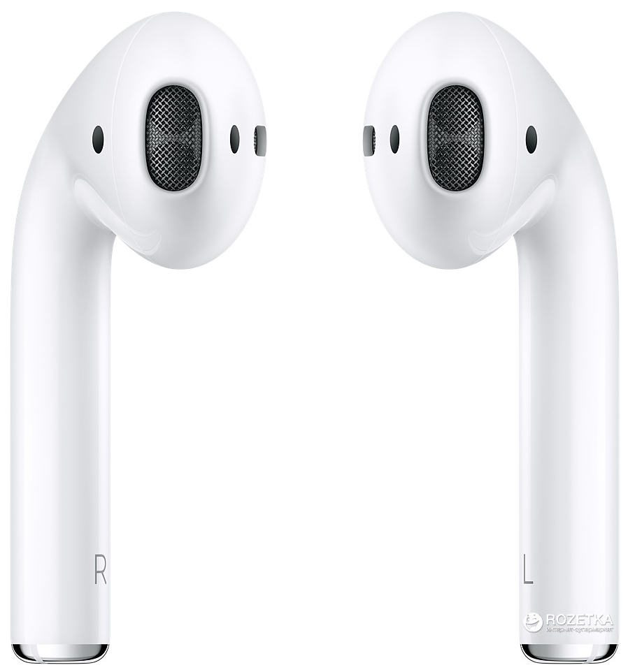
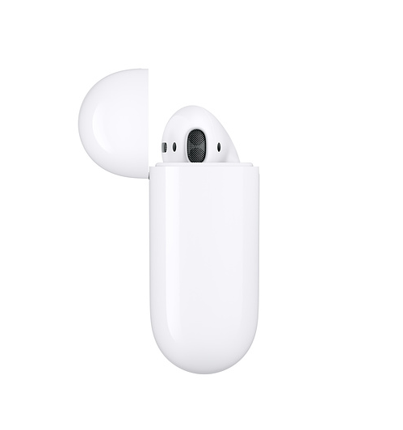

AirPods don't hurt as much as EarPods, but they need an adjustment period
Apple's AirPods are awesome and have some amazing features, but they're pretty much the same size and design as EarPods. EarPods hurt (at least for some of us). So, it stands to reason that AirPods would, too — except they don't ... mostly.
If you've followed what I write on iMore, you've probably realized that I'm one of those people that always complains about how big things don't fit me right. I've got small hands. I've got thin wrists. My feet are little. I might be giving you an incorrect image of my size. I'm not actually small.
Its an adjustment period
read more I'm guessing that's why Apple's EarPods have always felt so uncomfortable to me. It must be that my ear canal is also smaller than average. The EarPods are hard, with absolutely no padding, so they cause me a lot of pain if I wear them for too long. I'll sometimes end up with a headache. So, when Apple announced the new AirPods, I was both excited and disappointed.
Once you have decided on that, you have to choose between in-ear and over-the-head. There are advantages to both.